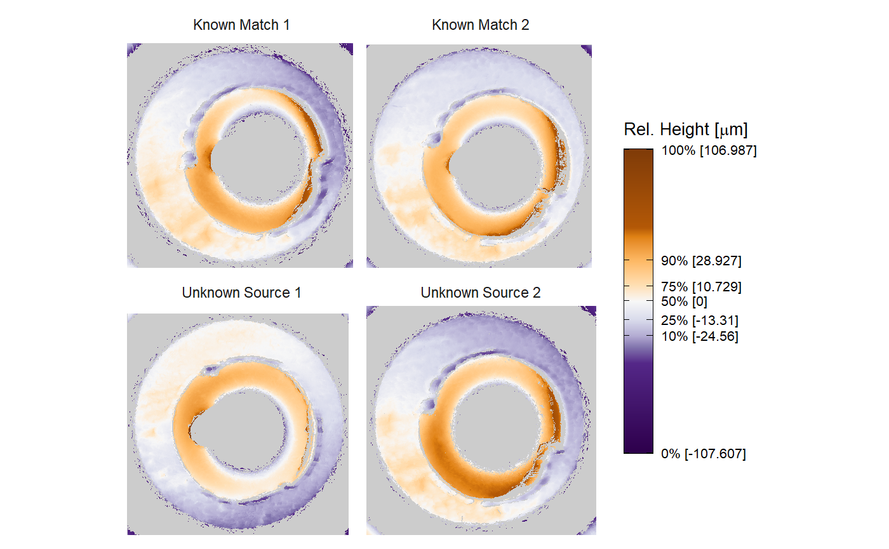
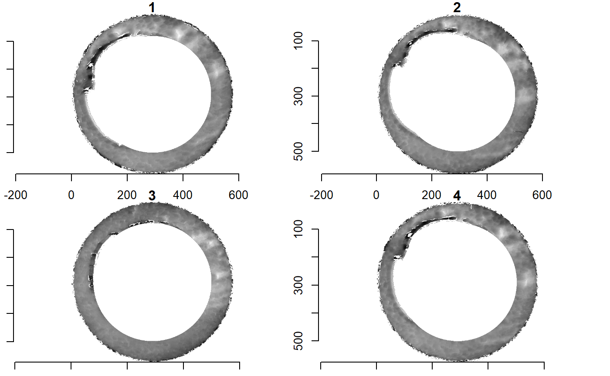
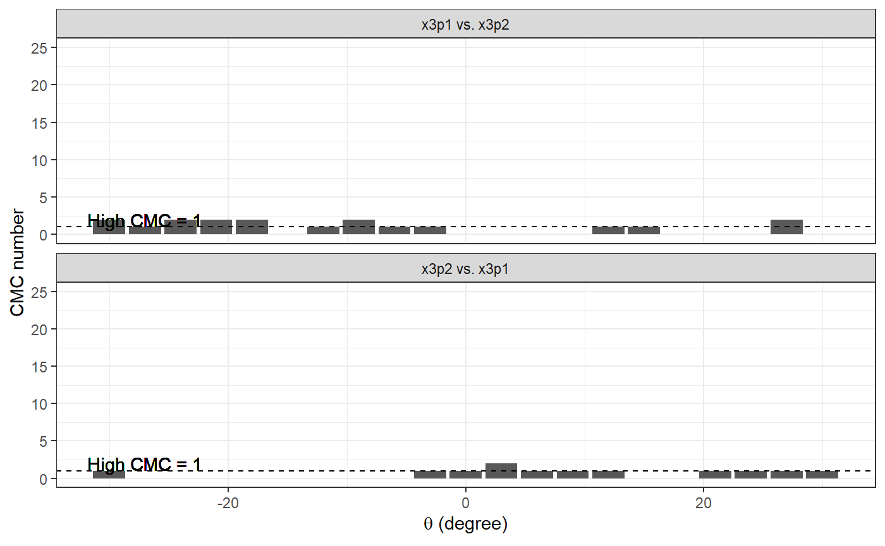
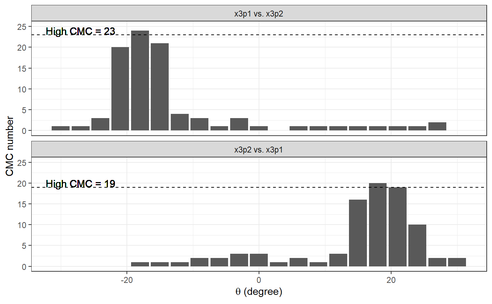
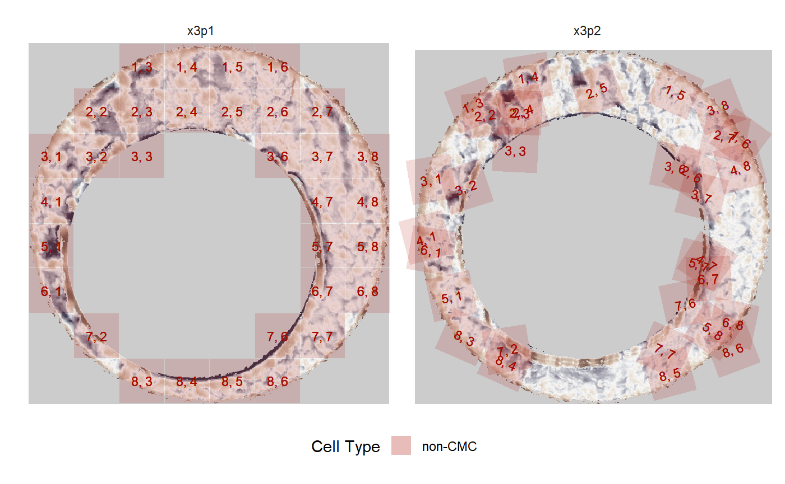
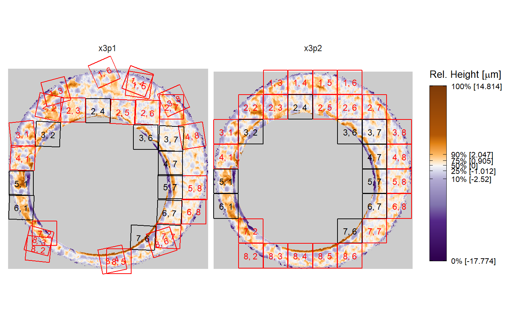
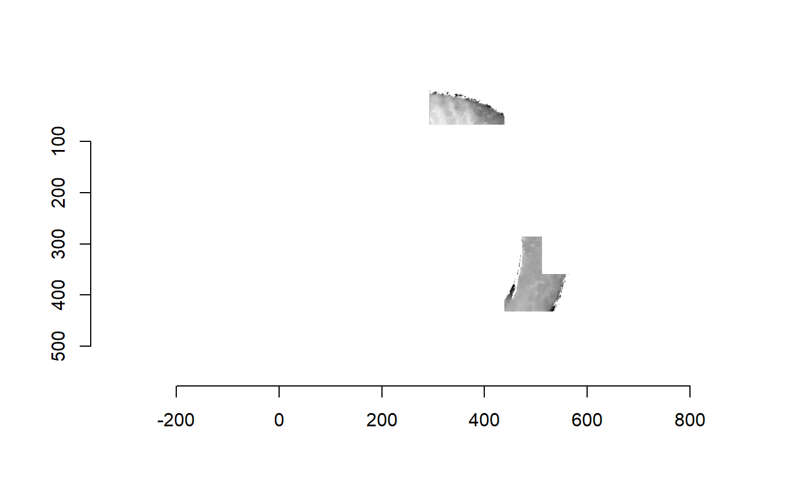
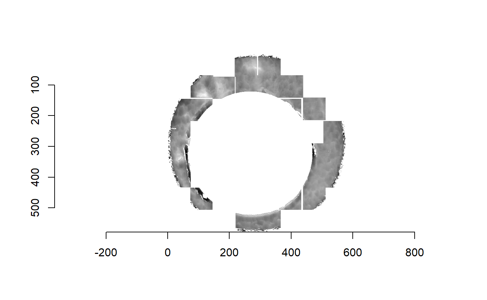

Reproducible Example
reproducibleExample.RmdIntroduction
This vignette is meant to illustrate the usage of the cmcR package via a use-case similar to what a forensic examiner taking a cartridge case identification profiency test would experience. In particular, it is common in such tests to give an examiner some number of “known match” cartridge cases and asked to identify additional matches in a collection of unknown-source cartridge cases.
To install the cmcR package from github, run the following command in your R console.
For this use case, suppose we have two known match cartridge cases (km1 and km2) and two of unknown source (unknown1 and unknown2). Let’s pretend that we don’t see the file path clearing indicating which of the unknown source cartridge cases match the known source. These cartridge case data came from a study done by Fadul et al. (2011) and are accessible here.
km1_raw <- x3ptools::read_x3p("~/bulletCartridgeScans/fadul_allScans/Fadul_1/cc/Fadul 1-1.x3p")
km2_raw <- x3ptools::read_x3p("~/bulletCartridgeScans/fadul_allScans/Fadul_1/cc/Fadul 1-2.x3p")
unknown1_raw <- x3ptools::read_x3p("~/bulletCartridgeScans/fadul_allScans/Fadul_2/cc/Fadul 2-1.x3p")
unknown2_raw <- x3ptools::read_x3p("~/bulletCartridgeScans/fadul_allScans/Fadul_1/cc/Fadul F.x3p")Cartridge case visualization
Visualizing cartridge case data is useful for determining, for example, how various pre-processing methods affect the final estimation of the breech face impressions. There are a number of ways to visualize cartridge case data, each with their own strengths and weaknesses.
Imager with Base Plot
A quick yet inflexible way is to turn the surface matrix into a cimg object and use base plot.
par(mar = c(1,1,1,1))
imager::imlist(
km1_raw$surface.matrix %>%
imager::as.cimg(),
km2_raw$surface.matrix %>%
imager::as.cimg(),
unknown1_raw$surface.matrix %>%
imager::as.cimg(),
unknown2_raw$surface.matrix %>%
imager::as.cimg()
) %>%
plot()
ggplot2
ggplots are more flexible, but geom_tile takes a considerable amount of time to plot relative to base plotting a cimg object. For the sake of space, only one ggplot is shown below.
km1_raw$surface.matrix %>%
imager::as.cimg() %>%
as.data.frame() %>%
ggplot(aes(x = x,y = y)) +
geom_raster(aes(fill = value)) +
scale_fill_gradient2(low = "grey0",
mid = "grey50",
high = "grey100",
na.value = "white",
midpoint = median(as.vector(median(km1_raw$surface.matrix,
na.rm = TRUE)))) +
coord_fixed(expand = FALSE) +
theme_bw() +
theme(panel.grid.major = element_blank(),
panel.grid.minor = element_blank(),
legend.position = "none",
axis.title.x = element_blank(),
axis.title.y = element_blank())
x3ptools::image_x3p
The x3ptools::image_x3p function provides 3D visualization functionality, but requires opening an RGL device on an individual machine (can’t be viewed in an R Markdown file without making it huge)
Pre-processing
If we want to compare these cartridge case scans based on their breech face impressions, they need to undergo some pre-processing. The cmcR package has the modularized family of preProcess_ functions or the all-in-one (except Gaussian filtering) selectBFImpression_ functions to accomplish this.
Below we can see how the preProcess_ family of functions can be used to process a cartridge case scan. The RANSAC method is applied twice for a more precise estimate of the breech face impression height value. Then the whitespace (all NA-valued rows/columns) on the exterior of the breech face impression is cropped. Next the firing pin circle is automatically estimated and any pixels within this circle are filtered out the scan. Lastly, a lowpass Gaussian filter meant to reduce the effect of high frequency “noise” in the scan is applied.
set.seed(3152020) #RANSAC method is based on randomly sampling points in matrix
km1_residuals <- km1_raw %>%
x3ptools::sample_x3p(m = 2) #down-sampled copy of km1_raw
km1_residuals$surface.matrix <- km1_residuals$surface.matrix %>%
preProcess_ransac(inlierTreshold = 10^(-5),
finalSelectionThreshold = 2*(10^(-5)),
iters = 150) %>%
preProcess_levelBF(useResiduals = TRUE) %>%
preProcess_ransac(inlierTreshold = .1*(10^(-5)),
finalSelectionThreshold = 2*(10^(-5)),
iters = 300) %>%
preProcess_levelBF(useResiduals = TRUE) %>%
preProcess_cropWS(croppingThresh = 2) %>%
preProcess_removeFPCircle(aggregation_function = mean,
smootherSize = 2*round((.1*nrow(.)/2)) + 1,
meshSize = 1,
houghScoreQuant = .9) %>%
preProcess_gaussFilter(res = km1_residuals$header.info$incrementY,
wavelength = 16,
filtertype = "lp")The selectBFImpression_ functions perform all of the pre-processing steps except for the Gaussian filtering in one function call. The following will process the 3 other scans in an equivalent manner to km1_residuals above. Note that the selectBFImpression_ functions actually returns a list of two elements: params containing the list of parameters under which the function call was made (for reproducibility purposes) and x3p containing the actual processed x3p object.
km2_residuals <- selectBFImpression_sample_x3p(x3p_path = "../../bulletCartridgeScans/fadul_allScans/Fadul_1/cc/Fadul 1-2.x3p",
ransacIters = 150,
ransacInlierThresh = 10^-5,
ransacFinalSelectThresh = 2*(10^-5),
useResiduals = TRUE)
unknown1_residuals <- selectBFImpression_sample_x3p(x3p_path = "../../bulletCartridgeScans/fadul_allScans/Fadul_2/cc/Fadul 2-1.x3p",
ransacIters = 150,
ransacInlierThresh = 10^-5,
ransacFinalSelectThresh = 2*(10^-5),
useResiduals = TRUE)
unknown2_residuals <- selectBFImpression_sample_x3p(x3p_path = "../../bulletCartridgeScans/fadul_allScans/Fadul_1/cc/Fadul F.x3p",
ransacIters = 150,
ransacInlierThresh = 10^-5,
ransacFinalSelectThresh = 2*(10^-5),
useResiduals = TRUE)
#> Warning in predict.lm(candidatePlane, observedPixelLocations): prediction from a
#> rank-deficient fit may be misleading
km2_residuals$x3p$surface.matrix <-
cmcR::preProcess_gaussFilter(surfaceMat = km2_residuals$x3p$surface.matrix,
res = km2_residuals$x3p$header.info$incrementY,
wavelength = 16,
filtertype = "lp")
unknown1_residuals$x3p$surface.matrix <-
cmcR::preProcess_gaussFilter(surfaceMat = unknown1_residuals$x3p$surface.matrix,
res = unknown1_residuals$x3p$header.info$incrementY,
wavelength = 16,
filtertype = "lp")
unknown2_residuals$x3p$surface.matrix <-
cmcR::preProcess_gaussFilter(surfaceMat = unknown2_residuals$x3p$surface.matrix,
res = unknown2_residuals$x3p$header.info$incrementY,
wavelength = 16,
filtertype = "lp")par(mar = c(1,1,1,1))
imager::imlist(
km1_residuals$surface.matrix %>%
imager::as.cimg(),
km2_residuals$x3p$surface.matrix %>%
imager::as.cimg(),
unknown1_residuals$x3p$surface.matrix %>%
imager::as.cimg(),
unknown2_residuals$x3p$surface.matrix %>%
imager::as.cimg()
) %>%
plot()
Cartridge case cell pair CCF calculation
The Congruent Matching Cells (CMC) method was developed at the National Institute of Standards and Technology (NIST) to quantify the similarity between two spent cartridge cases based on their breech face impressions (Song (2013)). The CMC method involves dividing a breechface impression scan into a grid of cells and comparing each cell in one scan to a corresponding region in the other scan. The motivation for this particular methodis that two breech face impressions tend to have regions of high similarity, e.g., where the firearm’s breech face impressed strongly into the cartridge case, and regions of low similarity, e.g., where the breech face may not have come into contact with the cartridge case. The highly similar regions may be drowned-out, in a sense, by the less similar regions if one were to calculate a similarity score considering the entirety of the two scans. By breaking up the breech face scans into a grid of cells, one can instead use the number of highly similar cells between the two scans as a more granular similarity metric.
The cellCCF and cellCCF_bothDirections functions perform the splitting of two surface matrices into a grid of cells and performing the cross-correlation calculation for a variety of rotation values. The only difference between the two functions is that cellCCF_bothDirections calls cellCCF twice where each scan in a pair plays the role of the “questioned” scan that is divided into cells. These functions simply return results of the comparison and don’t actually implement any of the CMC logic that goes into identifying “congruent matching cells.”
The call below will compare km1_residuals and unknown1_residuals by performing the following:
- Divide one of the matrices into a grid of \(8 \times 8\) cells
- Determine which of these cells contains fewer than 15% of observed values (i.e., 85% or more NA values). These cells are not considered for the CCF calculation.
- For each remaining cell: (a) rotate the other matrix (not the one divided into cells) by some theta value using a linear interpolation scheme (b) extract a region from this rotated matrix that is centered on the same index as the cell is in its matrix but is 4 times larger. (c) shift each cell/region by its respective average element value and divide by its standard deviation (d) calculate the translation, \((dx,dy)\), values by which the maximum CCF is attained between a cell/region pair (e) using these translation values, calculate the “raw” cross-correlation between the cell and the cell-sized portion of the larger region at which the max CCF was attained
- Compile a list of data frames, one per rotation value, of CCF, dx, and dy values per cell/region pair
- Perform steps 1-4 again, but by dividing the other matrix into a grid of cells to be compared to larger regions in the other matrix (i.e., the matrices swap roles).
For now we’ll just compare km1 to the two unknown source cartridge cases. The comparisons of km2 will be discussed below.
km1_unknown1_comparison <- cellCCF_bothDirections(km1_residuals,
unknown1_residuals$x3p,
thetas = seq(-30,30,by = 3),
cellNumHoriz = 8,
cellNumVert = 8,
regionToCellProp = 4,
minObservedProp = .15,
centerCell = "individualCell",
scaleCell = "individualCell")
km1_unknown2_comparison <- cellCCF_bothDirections(km1_residuals,
unknown2_residuals$x3p,
thetas = seq(-30,30,by = 3),
cellNumHoriz = 8,
cellNumVert = 8,
regionToCellProp = 4,
minObservedProp = .15,
centerCell = "individualCell",
scaleCell = "individualCell")We can see one of these data frames below, specifically where unknown1_residuals was rotated by 21 degrees before being compared to the cells of km1_residuals. The cellID column corresponds to the locations of each cell in km1_residuals. The cellNum column indexes the cells starting in the top left corner of the matrix moving right. The fact that this cellNum == 1 is missing from this data frame means that the top left corner of the matrix contains too few observed (less than 15%) observed values to be considered for the CCF calculation. The ccf, dx, and dy columns represent the CCF\(_{\max}\) value for a particular cell/region pair as well as the associated translation values at which this CCF value occurred. The values in the ccf column were calculated by replacing missing values (of which there are often many) with the average value in the cells/regions (which is necessary for calculating the CCF using the Cross-Correlation Theorem). The rawCorr column, on the other hand, contains correlation values calculated by effectively ignoring any NA-valued elements (specifically, using the cor function with use = "pairwise.complete.obs").
We are interested in extracting features from these CCF comparison results to differentiate matches from non-matches. In particular, we are interested only in cell/region pairs that are above a certain correlation threshold and have dx, dy, and theta values that are “close” to consensus-based values. We need to define what we mean be a consensus by determining some way to aggregate values together, preferably via some measure of center. It is common in the CMC literature to use the median dx, dy, and theta values, although the cmcR package lets you use any function you would like (although only mean, median, and mode have been tested).
The topResultsPerCell function will take the list of data frames returned by cellCCF (or cellCCF_bothDirections) and extract information about the dx, dy, and theta values at which each cell pair attained its maximum CCF value across the entire comparison (i.e., across every rotation). If we think of the CMC method as allowing cell pairs to “vote” for a translation and rotation of one cartridge case scan to align well with another, then the resulting data frame from topResultsPerCell is the number one choice per cell pair.
Congruent Matching Cells Filtering Logic
Initially proposed method
Song (2013) initially proposed using this data frame to determine CMCs. In particular, we can take the dx, dy, and theta columns, determine some consensus value among each (by, e.g, taking the median), and then determine how close each cell pair’s votes are to that consensus. For true matches, we would expect at least a majority of cells to have votes in the same ballpark. Thus, we can specify thresholds, dx_thresh, dy_thresh, and theta_thresh within which we will say that a cell pair’s vote is “close” to the consensual value. We also only want to consider pairs that achieve some minimum correlation threshold. Theccf_thresh argument sets this threshold.
Below we can see the CMCs selected using the top results between km1 and unknown1. We’ll refer to these as the “initial CMCs” since they were determined under the initially proposed CMC method by Song. There aren’t very many initial CMCs between km1 and unknown1.
km1_unknown1_comparison$comparison_1to2$ccfResults %>%
topResultsPerCell() %>%
cmcFilter(ccf_thresh = .8,
dx_thresh = 15)In contrast, there are more initial CMCs between km1 and unknown2. This indicates a greater level of similarity between km1 and unknown2.
“Improved” method
Having chosen correlation and translation thresholds by which we can classify cell pairs as “congruent matching cells,” a useful way to determine an estimate for the rotation values by which two cartridge cases will align is to plot the number of CMCs per rotation value. Identifying “modes” in these CMC-per-theta plots is what Tong et al. (2015) proposed as one improvement to the initially proposed method.
The plots below show the “forward” and “backward” distribution of CMCs per theta value for the comparisons between km1 and unknown1 as well as km1 and unknown2. The “forward” and “backward” directions correspond to the which of the two scans in the comparison was partitioned into a grid of cells (think of this as the “questioned” cartridge case) and which was broken up into overlapping regions. For example, in the plot immediately below, the “x3p1 vs. x3p2” facet means that km1 was partitioned into a grid of cells, each of which were compared to larger regions in unknown1.
Tong et al. (2015) propose using these CMC-per-theta distributions to identify which theta values have a “high” number of associated CMCs. They define a “high” number of CMCs to be the maximum number of CMCs for a particular comparison minus some empirical constant (1 in their paper). If a theta value has an associated high number of CMCs, but is far away from the theta value with the maximum number of CMCs, then there’s evidence to suggest that the pair is a non-match. The plot immediately below illustrates this idea. In both bar plots, the maximum number of CMCs is 2 (at \(\theta = -9\) in the first plot and \(\theta = 3\) in the second). However, a number of other theta values have high CMC numbers (1 in this example) that are far away from the max CMC theta values. We define “far away” as being greater than theta_thresh degrees away from the max CMC theta value.
cmcPerThetaBarPlot(km1_unknown1_comparison,
ccf_thresh = .8,
dx_thresh = 15,
theta_thresh = 3,
highCMCThresh = 1)
In contrast, we can see a distinct mode in the bar plots below for the comparison between km1 and unknown2. Additionally, any theta values with associated high CMC counts are within theta_thresh degrees of the maximum CMC theta value. The two modes also agree with each other, up to a sign, which is what we would expect in comparing a true match pair in both directions.

To settle on a final CMC number, Tong et al. (2015) proposes first identifying whether the high CMC theta values are too diffuse around the max CMC theta value using the logic described above. If a particular pair doesn’t pass this criterion, then we assign to it the initial CMCs (described above) as its final CMC number. Otherwise, if a theta value mode is identified, then we count the number of CMCs in this mode, including those associated with the max CMC as well as CMCs associated with theta values within theta_thresh of the max CMC theta value. We do this for both the “forward” and “backward” CMC distributions and combine the results as the final CMC count, excluding any duplicate pairs.
The cmcFilter_improved function counts the number of CMCs under this improved method. It will return not only the final CMCs, but also the initial CMCs determined under the initially proposed method (in both directions).
km1_unknown1_cmcs <- cmcR::cmcFilter_improved(km1_unknown1_comparison,
consensus_function = median,
ccf_thresh = .8,
dx_thresh = 15,
theta_thresh = 3)
km1_unknown2_cmcs <- cmcR::cmcFilter_improved(km1_unknown2_comparison,
consensus_function = median,
ccf_thresh = .8,
dx_thresh = 15,
theta_thresh = 3)The improved CMC method did not yield any “final CMCs” for the comparison between km1 and unknown1. As such, we would assign the pair whichever was the minimum number of initial CMCs calculated between both directions. The CMC(s) between km1 and unknown1 are shown below.
km1_unknown1_cmcs$initialCMCs[[1]][[which.min(c(nrow(km1_unknown1_cmcs$initialCMCs[[1]][[1]]),
nrow(km1_unknown1_cmcs$initialCMCs[[1]][[2]])))]]In contrast, the comparison between km1 and unknown2 did yield final CMCs, which are shown below.
The same type of comparisons can be done between km2 and the two unknown source scans, although we now have very strong evidence (apart from being able to read file paths) that unknown1 does not match km1 while unknown2 does.
km2_unknown1_comparison <- cellCCF_bothDirections(km2_residuals$x3p,
unknown1_residuals$x3p,
thetas = seq(-30,30,by = 3),
cellNumHoriz = 8,
regionToCellProp = 4,
minObservedProp = .15,
centerCell = "individualCell",
scaleCell = "individualCell")
km2_unknown2_comparison <- cellCCF_bothDirections(km2_residuals$x3p,
unknown2_residuals$x3p,
thetas = seq(-30,30,by = 3),
cellNumHoriz = 8,
regionToCellProp = 4,
minObservedProp = .15,
centerCell = "individualCell",
scaleCell = "individualCell")
km2_unknown1_cmcs <- cmcR::cmcFilter_improved(km2_unknown1_comparison,
consensus_function = median,
ccf_thresh = .8,
dx_thresh = 15)
km2_unknown2_cmcs <- cmcR::cmcFilter_improved(km2_unknown2_comparison,
consensus_function = median,
ccf_thresh = .8,
dx_thresh = 15)Interestingly, we see that the comparison between km2 and unknown1 does actually yield final CMCs, although only 5. This illustates an important property of this method - its extreme sensitivity to making the “correct” pre, inter, and post-processing decisions. For example, changing ccf_thresh from .8 to .81 in the call to cmcFilter_improved between km1 and unknown1 above yields 0 initial and final CMCs.
The final CMCs for the comparison between km2 and unknown2 are given below.
Diagnostic tools
The cmcPlot function allows us to visualize the regions of a cartridge case scan that have been identified as “congruent matching.”
For example, the 1 initial CMC calculated between km1 and unknown1 is shown below.

In contrast, the final CMCs between km1 and unknown2 are shown below.

The same types of plots can be made for the comparison between km2 and the unknown source scans. Below are the final CMCs between km2 and unknown1.

And the CMCs for the comparison between km2 and unknown2 are shown below.

References
Song, J. (2013). Proposed “NIST Ballistics Identification System (NBIS)” Based on 3D Topogra-phy Measurements on Correlation Cells.American Firearm and Tool Mark Examiners Journal,45(2):11.
Tong, M., Song, J., and Chu, W. (2015). An Improved Algorithm of Congruent Matching Cells(CMC) Method for Firearm Evidence Identifications.Journal of Research of the National Institute of Standards and Technology, 120:102.
Fadul T., Hernandez G., Stoiloff S. and Gulati Sneh “An Empirical Study to Improve the Scientific Foundation of Forensic Firearm and Tool Mark Identification Utilizing 10 Consecutively Manufactured Slides,” 2011 NCJRS 237960